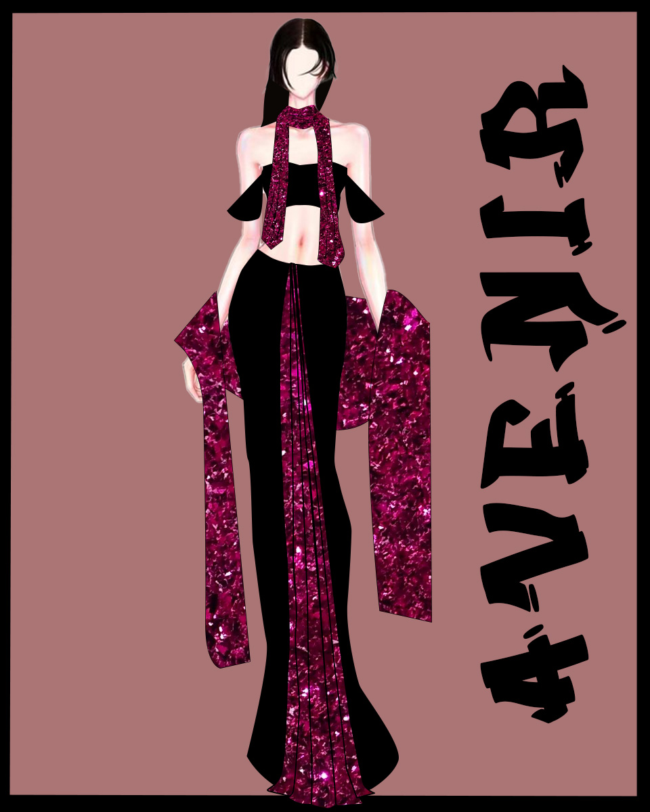
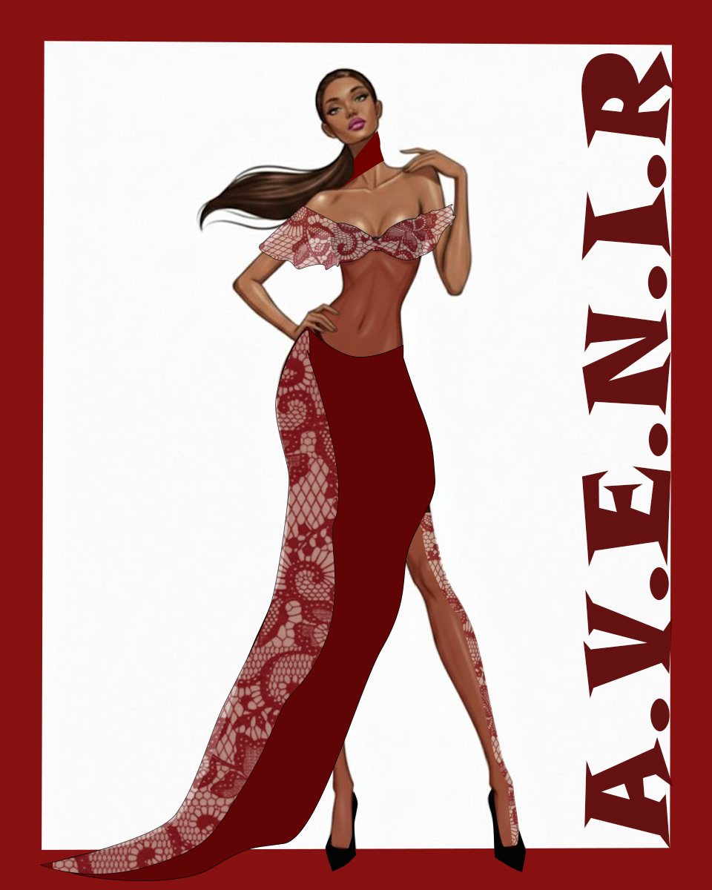
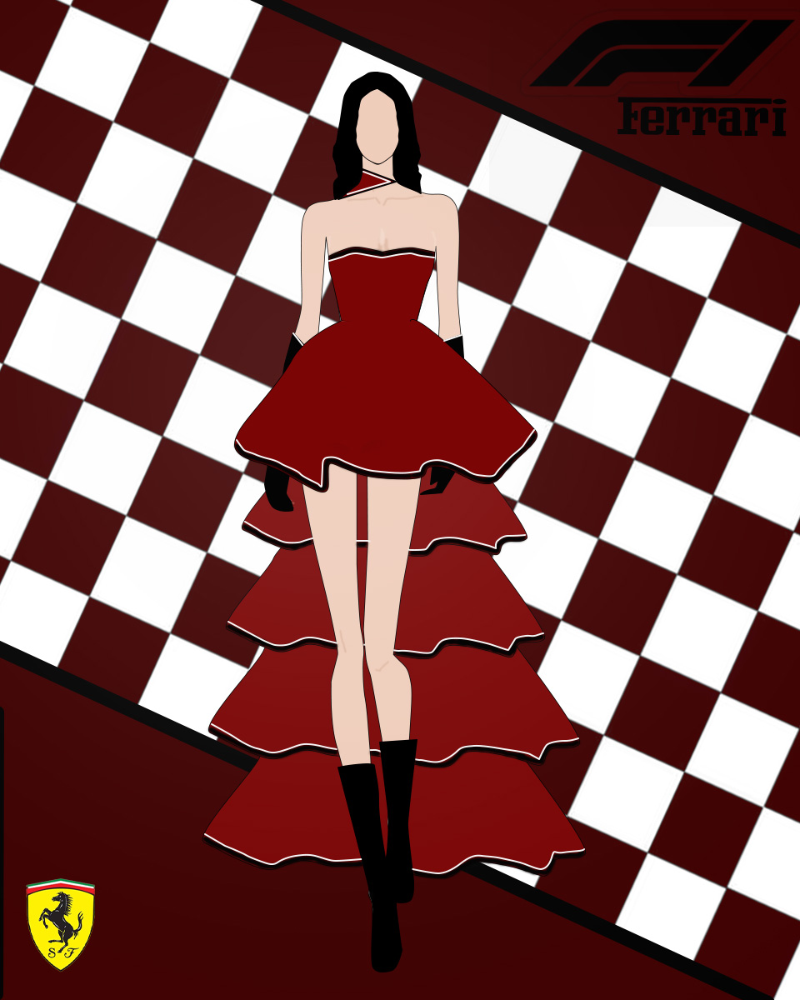

01
Digital fashion designer
I create digital garments, visual stories, and AI-led styling ideas for a new generation of expressive fashion.
From sketch to AI visualization.
About
I'm Tanisha, a digital fashion designer with a computer science background. My work blends silhouette, colour, texture, and emerging technology to imagine garments that feel dramatic, modern, and wearable in digital-first spaces.
Signature fashion illustrations
Styling and concept exploration
Future-ready digital fashion focus
Portfolio

01

02

03

04

05

06

07
Projects
A smart styling concept that recommends looks based on body preferences, event mood, colour palettes, and wardrobe goals.
A curated digital showroom for presenting fashion sketches, moodboards, and AI-assisted collection directions.
Contact